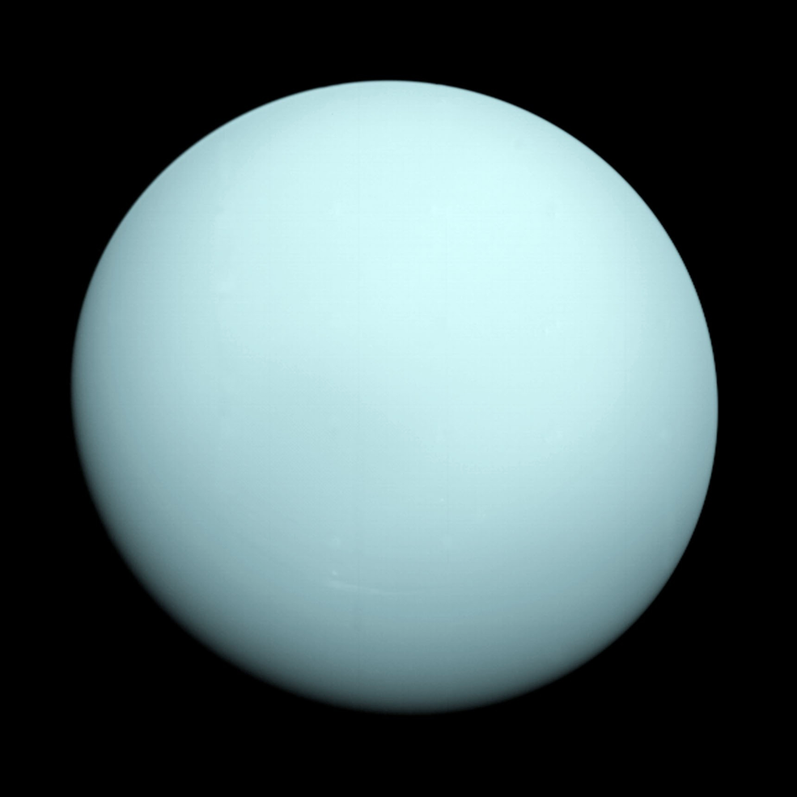

Uranus
Date of Discovery:
March 13, 1781
Discovered By:
William Herschel
Average Oribit Distance:
1,783,744,300 miles
Mean Orbit Velocity:
15,209 mph
Orbit Eccentricity:
0.04725744
Equatorial Inclination:
97.8 degrees (retrograde rotation)
Equatorial Radius:
15.759.2 miles
Equatorial Circumference:
99,018.1 miles
Surface Area:
3,120,894,516 square miles
Surface Gravity:
29.1 ft/s squared
Escape Velocity:
47,826 mph
Atmospheric Constituents:
Hydrogen, Helium, Methane